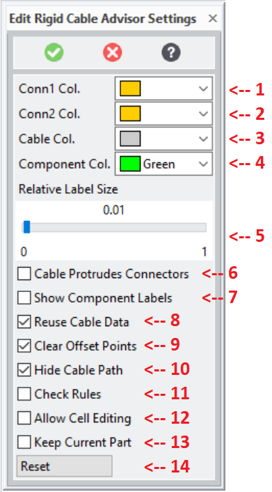

RCA_SETTINGS [Public Dialog]
Package: soco-cables (Nick name(s): :rca :soco_cables)
Edit customizable module settings.
The settings dialog can be activated via the Modeling Settings user interface
(File -> Settings -> Extensions -> Rigid Cable Settings ...).
See also: The Rigid Cable Advisor Customization Guide for all customization options.
Dialog

- Changes
*rca-conn1-color*(Default color for connector1 {integer}) - Changes
*rca-conn2-color*(Default color for connector1 {integer}) - Changes
*rca-cable-color*(Default color for cables {integer}) - Changes
*rca-comp-color*(Default color for components {integer}) - Changes
*rca-lbl-rel-size*(Relative size of label with regard to total length of cable {float}) - Changes
*rca-model-tip-dist*(Let cable protrude through the connector {boolean}) - Changes
*rca-create-lbl-comp-feedback*(Determine if labels for components should be shown {boolean}) - Changes
*rca-use-previous-cabledata*(Reuse previous points if creating a new cable {boolean}) - Changes
*rca-auto-clear-offset-points*(Should point offset values be reset (i.e) - Changes
*rca-display-cable-path-only*(Only display cable path when adding/editing points {boolean}) - Changes
*rca-check-illegal-cond*(Show violated rules in display window {boolean}) - Changes
*rca-enable-cell-editing*(Allow editing of point values directly in table (no multi-selection) {boolean}) - Changes
*rca-keep-current-part*(Keep current part when editing cable (if nil, cable becomes current part) {boolean}) - Reset the settings to the startup configuration.
Syntax
graph LR
action(RCA_SETTINGS) --> in{ }
in --> MODEL_TIP_DIST(:MODEL_TIP_DIST)
MODEL_TIP_DIST -.-> MODEL_TIP_DIST-arg[":YES | :NO"]
MODEL_TIP_DIST-arg --> out{ }
in --> CONN1_COLOR(:CONN1_COLOR)
CONN1_COLOR -.-> CONN1_COLOR-arg[rgb]
CONN1_COLOR-arg --> out{ }
in --> CONN2_COLOR(:CONN2_COLOR)
CONN2_COLOR -.-> CONN2_COLOR-arg[rgb]
CONN2_COLOR-arg --> out{ }
in --> CABLE_COLOR(:CABLE_COLOR)
CABLE_COLOR -.-> CABLE_COLOR-arg[rgb]
CABLE_COLOR-arg --> out{ }
in --> COMP_COLOR(:COMP_COLOR)
COMP_COLOR -.-> COMP_COLOR-arg[rgb]
COMP_COLOR-arg --> out{ }
in --> REL_LBL_SIZE(:REL_LBL_SIZE)
REL_LBL_SIZE -.-> REL_LBL_SIZE-arg[scale]
REL_LBL_SIZE-arg --> out{ }
in --> LBL_COMP_FEEDBACK(:LBL_COMP_FEEDBACK)
LBL_COMP_FEEDBACK -.-> LBL_COMP_FEEDBACK-arg[":YES | :NO"]
LBL_COMP_FEEDBACK-arg --> out{ }
in --> USE_PREVIOUS_CABLEDATA(:USE_PREVIOUS_CABLEDATA)
USE_PREVIOUS_CABLEDATA -.-> USE_PREVIOUS_CABLEDATA-arg[":YES | :NO"]
USE_PREVIOUS_CABLEDATA-arg --> out{ }
in --> CLEAR_OFFSET_POINTS(:CLEAR_OFFSET_POINTS)
CLEAR_OFFSET_POINTS -.-> CLEAR_OFFSET_POINTS-arg[":YES | :NO"]
CLEAR_OFFSET_POINTS-arg --> out{ }
in --> CABLE_PATH_ONLY(:CABLE_PATH_ONLY)
CABLE_PATH_ONLY -.-> CABLE_PATH_ONLY-arg[":YES | :NO"]
CABLE_PATH_ONLY-arg --> out{ }
in --> CHECK_RULES(:CHECK_RULES)
CHECK_RULES -.-> CHECK_RULES-arg[":YES | :NO"]
CHECK_RULES-arg --> out{ }
in --> ENABLE_CELL_EDITING(:ENABLE_CELL_EDITING)
ENABLE_CELL_EDITING -.-> ENABLE_CELL_EDITING-arg[":YES | :NO"]
ENABLE_CELL_EDITING-arg --> out{ }
in --> KEEP_CURRENT_PART(:KEEP_CURRENT_PART)
KEEP_CURRENT_PART -.-> KEEP_CURRENT_PART-arg[":YES | :NO"]
KEEP_CURRENT_PART-arg --> out{ }
in --> reset(:RESET)
reset --> out
out--> in
out --> OK(COMPLETE)
Options
:MODEL_TIP_DIST{:YES|:NO}- Configures
*rca-model-tip-dist*(Let cable protrude through the connector {boolean}) :CONN1_COLOR{integer}- Configures
*rca-conn1-color*(Default color for connector1 {integer}) CONN2_COLOR{integer}- Configures
*rca-conn2-color*(Default color for connector1 {integer}) :CABLE_COLOR{integer}- Configures
*rca-cable-color*(Default color for cables {integer}) :COMP_COLOR{integer}- Configures
*rca-comp-color*(Default color for components {integer}) :REL_LBL_SIZE{float}- Configures
*rca-lbl-rel-size*(Relative size of label with regard to total length of cable {float}) :LBL_COMP_FEEDBACK{:YES|:NO}- Configures
*rca-create-lbl-comp-feedback*(Determine if labels for components should be shown {boolean}) :USE_PREVIOUS_CABLEDATA{:YES|:NO}- Configures
*rca-use-previous-cabledata*(Reuse previous points if creating a new cable {boolean}) :CLEAR_OFFSET_POINTS{:YES|:NO}- Configures
*rca-auto-clear-offset-points*(Should point offset values be reset (i.e) :CABLE_PATH_ONLY{:YES|:NO}- Configures
*rca-display-cable-path-only*(Only display cable path when adding/editing points {boolean}) :CHECK_RULES{:YES|:NO}- Configures
*rca-check-illegal-cond*(Show violated rules in display window {boolean}) :ENABLE_CELL_EDITING{:YES|:NO}- Configures
*rca-enable-cell-editing*(Allow editing of point values directly in table (no multi-selection) {boolean}) :KEEP_CURRENT_PART{:YES|:NO}-
Configures
*rca-keep-current-part*(Keep current part when editing cable (if nil, cable becomes current part) {boolean})